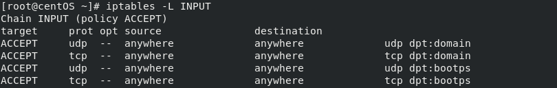

iptables command
iptables is a command line interface used to set up and maintain tables for the Netfilter firewall for IPv4( ip6tables for IPv6)
OPTIONS:
-L: List all rules in the selected chain(INPUT, FORWARD, OUTPUT...). If no chain is selected, all chains are listed. Like every other iptables command, it applies to the specified table (filter is the default)
-v: verbose output
--line-numbers: add a number at any connection row